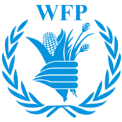

4면해결 방안과 기대 효과
개인적 차원
먹을 만큼만 덜어 음식 남기지 않기, 공정무역 제품 사기, 기부·캠페인 참여
사회적 차원
푸드뱅크 늘리기, 기업의 남는 식품 기부, 소비기한 표시제 알리기
국제적 차원
긴급 식량 원조, 개발도상국 농업 기술 지원, 기후 변화 공동 대응(SDGs 2번 '기아 종식')
기대 효과
인간 안보
국가가 아닌 사람 한 명 한 명이 공포와 결핍에서 벗어나 안전하게 사는 것.
굶주림이 줄면 '결핍으로부터의 자유'가 보장되어 인간 안보가 실현된다.
적극적 평화
갈퉁은 전쟁이 없는 소극적 평화를 넘어 가난·굶주림 같은 구조적 폭력까지 사라진 상태를
적극적 평화라 했다. 기아 해결은 구조적 폭력을 없애 적극적 평화로 가는 길이다.
5면기아 해결을 돕는 기구: 유엔 세계식량계획(WFP)

UN 산하 국제기구 · 1961년 설립
본부: 이탈리아 로마
설립 목적
긴급 상황에서 생명을 구하고, 스스로 식량을 마련하도록 도와 굶주림을 없애는 것(Zero Hunger)
주요 활동
- 긴급 식량 지원: 전쟁·재난 지역에 식량 전달
- 학교 급식: 아이들의 영양과 교육을 함께 지킴
- 자립 지원: 농지·저수지 만들기에 참여하면 식량·현금 지원
기여 방식
- 해마다 100여 개국 1억 명 이상 지원
- 2020년 노벨 평화상 수상
- 한국도 예전에 도움받았지만 지금은 돕는 나라
 수단에서 WFP 밀가루 포대를 나르는 모습 (2024)
사진: WFP/Abubaker Garelnabei / Wikimedia Commons / CC BY 4.0
수단에서 WFP 밀가루 포대를 나르는 모습 (2024)
사진: WFP/Abubaker Garelnabei / Wikimedia Commons / CC BY 4.0
6면세계 시민으로서 나의 실천
실천 행동 목록
- 급식 잔반 0 도전 (먹을 만큼만 받기)
- 가족과 장보기 목록 만들기
- 공정무역 제품 골라 사기
- 기아 문제 카드뉴스 공유하기
- WFP 앱으로 한 끼 기부하기
실천 기록
[실천 사진 붙이는 곳]직접 찍은 사진 1장 이상
실천하고 느낀 점
처음부터 먹을 만큼만 받으니 생각보다 쉽게 잔반을 줄일 수 있었다. 내가 버리던 음식이 누군가에게는
한 끼가 될 수 있다는 것을 느꼈다. 작은 습관이 모이면 세계도 바뀔 수 있다고 믿는다.
부록참고 자료 및 사진 출처
참고 도서
『오늘부터 나는 세계 시민입니다』, 공윤희·윤예림, 창비교육
참고 자료
- 유엔식량농업기구(FAO) 세계 식량 안보 보고서
- 유엔 세계식량계획(WFP) 누리집
- 유엔 지속가능발전목표(SDGs) 2번 '기아 종식'
사진 출처
- 2면: Oxfam East Africa (Aimee Brown), Wikimedia Commons, CC BY 2.0
- 5면: WFP/Abubaker Garelnabei, Wikimedia Commons, CC BY 4.0
- 5면 로고: World Food Programme, Wikimedia Commons
- 6면: 직접 촬영
SDGs 2번 · 기아 종식
2030년까지 굶주림을 끝내고, 모든 사람이 일 년 내내 안전하고 영양가 있는 음식을 충분히 먹을 수 있게 한다.